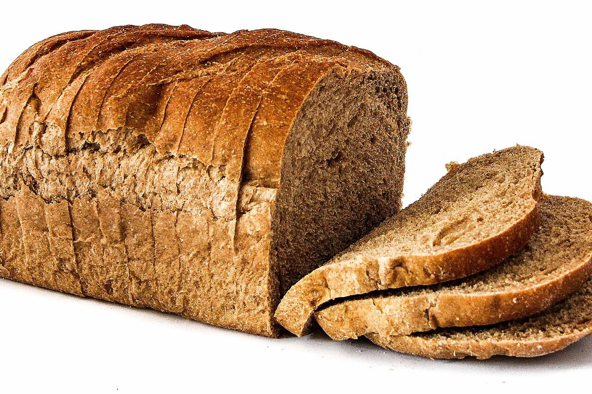

メニュー
商品名・価格などの詳細は準備中です。

商品のご案内
| 商品ラインナップ | 準備中(お問い合わせください) |
|---|---|
| 価格 | 準備中(お問い合わせください) |
| ご予約・お取り置き | 準備中(お問い合わせください) |
掲載予定の内容は、お店からご提供いただいた情報をもとに整えます。写真は実際の商品ではなく、イメージです。


メニューについてのご質問は、お電話(080-6344-3865)または Instagram からお問い合わせください。
掲載の写真はフリー素材のイメージで、店舗の実際の商品・店内ではありません。他の地域で撮影されたものや撮影地が不明なものを含みます。縮小・切り抜きなどの加工をしています。
商品名・価格などの詳細は準備中です。

| 商品ラインナップ | 準備中(お問い合わせください) |
|---|---|
| 価格 | 準備中(お問い合わせください) |
| ご予約・お取り置き | 準備中(お問い合わせください) |
掲載予定の内容は、お店からご提供いただいた情報をもとに整えます。写真は実際の商品ではなく、イメージです。
メニューについてのご質問は、お電話(080-6344-3865)または Instagram からお問い合わせください。